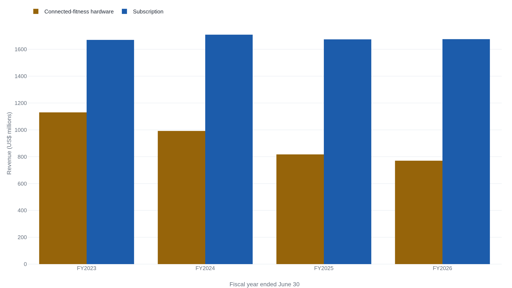
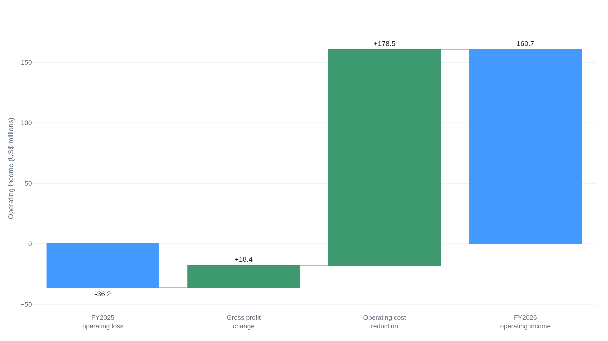
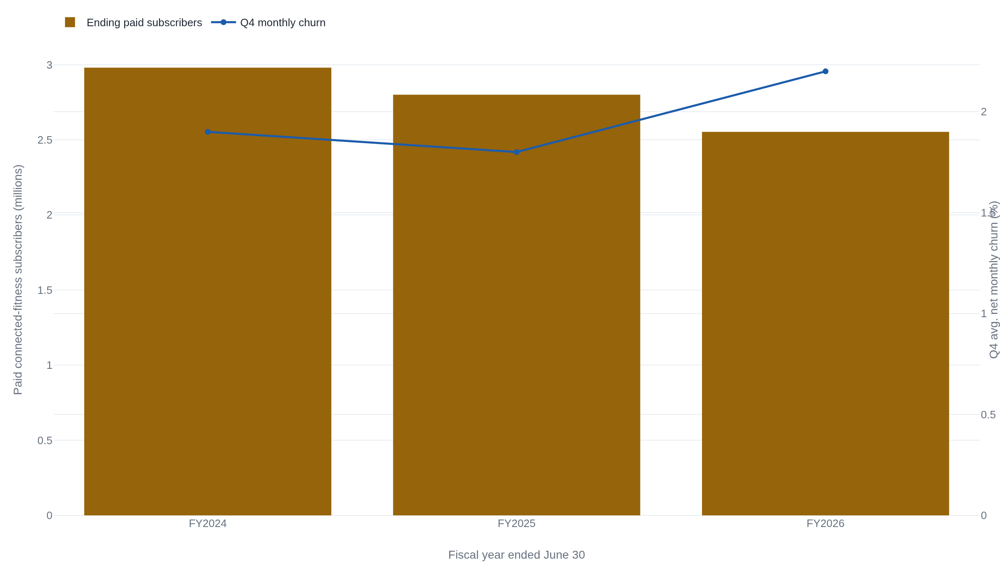
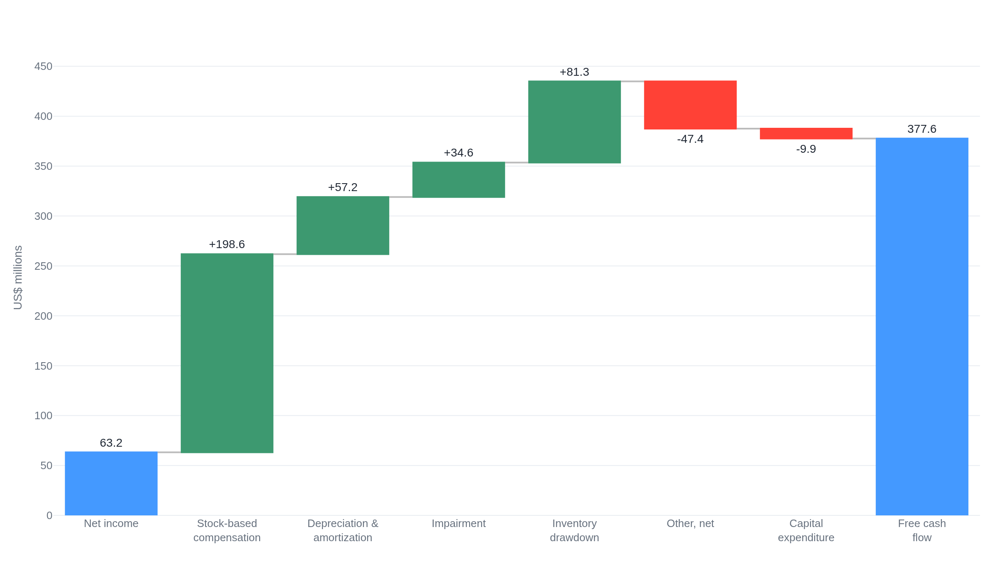

Peloton cut its way to its first annual profit
The fiscal 2026 profit is real, but $178 million of cost cuts and a single quarter carried it, in a year when revenue, subscribers, and guidance all fell.
A profit the market sold
On August 6, 2026, Peloton reported the first annual profit in its history: net income of $63.2 million for the fiscal year that ended on June 30.12 The stock fell the same day. How far depends on which report you read, somewhere between about 11 and 16 percent.345
A company reaches profitability for the first time and its owners mark it down. The disagreement is not between Peloton and its skeptics. It is inside the company's own filing. Management called the year a turnaround built on an improved revenue trajectory. The same statements show revenue down 1.8 percent from the year before, and the company's own guidance calls for revenue to fall again next year.1
That gap is the general problem in a specific case. When a business turns its first profit after years of losses, the number by itself settles nothing. It does not say whether the company found earnings that will last or simply spent a year cutting faster than it shrank. Peloton sells connected-fitness hardware, the stationary bikes and treadmills with a screen bolted to the front, and a monthly membership to the classes that stream on them. To tell a durable profit from a produced one here, you have to take the reported $63.2 million apart and see where each piece came from, and whether it can come again.
The bike and the membership
Peloton earns money two ways, and they could hardly be less alike. The first is connected-fitness hardware: a bike or a tread, sold once, at a price that has to cover a physical machine, its components, and the freight to ship it. The second is the subscription: a recurring monthly fee for the library of classes, whose cost is mostly the studios, instructors, and streaming that would run whether the next member joined or not.
The difference shows up in gross margin, the share of a stream's revenue that survives the direct cost of delivering it. In the fourth quarter of fiscal 2026, Peloton kept 73.6 cents of every subscription dollar and 13.4 cents of every hardware dollar.1
Hold those two figures, because the whole company runs on the arithmetic between them. A dollar of subscription revenue is worth roughly five and a half times as much gross profit as a dollar of hardware revenue. So the mix matters more than the total. As the low-margin hardware business shrinks and the high-margin subscription holds, the company's overall gross margin rises even when its revenue does not. Total gross margin was 52.6 percent in fiscal 2026, up from 50.9 percent a year earlier and 44.7 percent two years before that.1
And the hardware business is doing exactly that, shrinking. It has fallen every year for four years, from $1,130.2 million in fiscal 2023 to $770.4 million in fiscal 2026.16 Subscription revenue over the same four years has barely moved, holding near $1.68 billion. Total revenue has now fallen every year since fiscal 2022, when it peaked at $3.58 billion.7

"Fiscal 2026 was a defining milestone as Peloton delivered its first full year of net profitability driven by our improved revenue trajectory and substantial improvements in our cost structure."1 Peter Stern, CEO, in the FY2026 results
The phrase to sit with is "improved revenue trajectory." The revenue line it describes fell. What improved was the direction of profit and the mix underneath it, not the top line, and the rest of the filing bears that out.
The swing was almost all cost
A company can grow its way to a profit, earn more on each sale, or spend less. For Peloton in fiscal 2026 it was almost entirely the last of these. The clearest place to see it is the operating line, the profit left after the cost of goods and the cost of running the company but before interest and tax. In fiscal 2025 that line was a loss of $36.2 million. In fiscal 2026 it was a positive $160.7 million, a swing of about $196.9 million.1
Split that swing in two and the source is plain. Higher gross profit contributed about $18.4 million of it. Lower operating expenses contributed about $178.5 million, as the company's spending below gross profit fell from $1,304.5 million to $1,126.0 million.1 Roughly nine of every ten dollars of the improvement came from cutting, not from selling more or earning more per sale.

Within the cost cut, the largest single piece was general and administrative expense, the overhead of the corporation itself, down about $97 million to $430.3 million. Another $70 million or so came from charges that shrank or disappeared: impairments, restructuring, and a supplier-settlement line that fell from $23.5 million to zero.1
A first profit invites a specific suspicion, that it is a one-time accounting event rather than real earnings. The usual culprit is tax: a deferred benefit can lift net income for a year without the business earning anything. That is not what happened here. Income before tax was $63.1 million and the tax line came to about $0.1 million, so net income of $63.2 million is essentially pretax income.1 The profit is real. It is simply a cost story.
One more line separates operating income of $160.7 million from net income of $63.2 million, and it is mostly interest: $123.8 million of interest expense against $36.4 million of interest income.1 Peloton spent the year paying down debt. It retired $199.0 million of convertible notes and $10.0 million of a term loan, cutting its net debt from about $459 million to about $93 million.1 Lower interest next year is a plausible support for net income, and it is worth noting as context, not counting as a forecast. It also does not change the shape of this year's result: the profit exists because the company cut, and a company can only cut its way to profit once.
Fewer members, paying more
If the profit is a cost story, the durable part of the case is the subscription. It is genuinely good business. Subscription revenue held almost exactly flat, $1,675.6 million against $1,673.7 million, at a gross margin above 70 percent and rising.1 Adjusted EBITDA rose 16 percent to $468.2 million.1 It is the company's preferred measure of the cash its operations throw off before interest, tax, depreciation, and its own adjustments, chiefly stock pay. That figure strips out real costs, so it belongs beside the GAAP result rather than in place of it, but the direction is a fair sign the subscription engine is healthy.
Underneath the flat revenue, though, the base that pays it is getting smaller. Paid connected-fitness subscribers, the members whose bikes and treads carry a live subscription, fell from 2.98 million in fiscal 2024 to 2.553 million in fiscal 2026, down 247,000 or 8.8 percent in the last year alone.16 Churn, the share of those members who cancel in an average month, rose to 2.2 percent in the fourth quarter from 1.8 percent a year earlier.1 The fourth quarter is seasonally the leakiest, so the fair comparison is quarter against like quarter, and by that comparison more members are leaving each month than were a year ago.

Flat revenue on a base that shrank 8.8 percent means the members who stayed are paying more, on average, than the members of a year ago. The same roughly $1.68 billion is now spread over fewer people. Read one way this is strength: Peloton has raised what it collects per member without collapsing the base. Read another way it is a caution. A business that holds its revenue by charging remaining customers more while losing customers faster is running a race it can win for only so long. One honest limit on the point: Peloton does not publish a clean price per connected-fitness membership. Its reported subscription revenue also includes a separate app tier, so the per-member rise is directional rather than a figure you can pin.1
What keeps a membership worth paying for is that the classes stay fresh. On that the company offers one supporting number: 69 percent of the workouts its members completed in fiscal 2026 came from classes released during the same year.8 The library is not going stale. The durable asset is real. It is just being asked to hold the line with fewer, faster-leaving members behind it.
What the free cash flow leans on
The third number Peloton's supporters point to is cash. Free cash flow, the cash left from operations after what the company spends on property and equipment, rose 17 percent to $377.6 million.1 For a company that lost billions a few years ago, that is a real turnaround. But cash generated is not the same as profit earned, and the space between them is where you learn how repeatable the cash is.
Start from net income of $63.2 million and follow it to the $387.6 million of cash the operations produced. Most of the distance is covered by non-cash add-backs and one release of working capital. The add-backs are $198.6 million of stock-based compensation, $57.2 million of depreciation and amortization, and $34.6 million of impairment. The release is an $81.3 million drawdown of inventory.1 Two of those deserve a second look before the $377.6 million is taken as clean earnings.

The largest single item is stock-based compensation, $198.6 million. It is added back because no cash left the company: employees were paid in shares. But it is a real cost all the same. It hands existing owners a smaller slice of the company, and adding it back to cash does not make that dilution go away. It flatters the cash figure without lowering the expense.
The second is the inventory drawdown, $81.3 million. Peloton sold more goods than it built, running its inventory down from $205.6 million to $135.4 million, and the cash that had been tied up in unsold bikes came back.1 That is genuine cash, but it is the kind you can collect only once. Inventory cannot fall below zero, and at $135.4 million most of the drawdown is already spent. Capital spending was just $9.9 million, very low for a company that makes physical machines. A business that underinvests can post strong free cash flow for a while without it meaning the flow will hold.
The company's own outlook concedes the point. Peloton guides fiscal 2027 free cash flow to at least $350 million, a floor below the $377.6 million it just reported.1 The cash is real. A good part of this year's is not repeatable, and management is not guiding as though it were.
The limits of one profitable year
Put the pieces back together and the reported profit resolves into parts that behave very differently. The subscription margin is durable. The operating profit came mostly from cost cuts that happen once. The cash leans on a stock-pay add-back and an inventory release that is nearly spent. And the top line and the subscriber base are both still falling.
One more fact bears directly on how much a single profitable year proves. The year was not evenly profitable. Fourth-quarter net income was $61.6 million against $63.2 million for the full year, which means the first three quarters together netted about $1.6 million.1 The fourth quarter also absorbed a $23.8 million one-time legal charge for patent litigation, so the underlying quarter was stronger still and the first nine months were closer to breakeven than even that $1.6 million suggests.1 A year that is profitable because one quarter was profitable is a thinner result than the annual figure shows on its own.
The guidance closes the loop back to where the filing began. Peloton guides fiscal 2027 revenue to $2.3 to $2.4 billion, down about 4 percent at the midpoint,1 below the roughly $2.44 billion analysts had modeled.3 It guides its subscriber count down again.1 That guide, not the profit, is what the market traded on the morning the stock fell. The company that reported an improved revenue trajectory is telling its owners revenue will keep shrinking.
The first profitable year proves Peloton can operate at a profit at its current size, and that its subscription margins are strong enough to carry the company if the shrinking stops. It does not prove durable earnings power. The profit came mostly from cost cuts that happen once. Its cash leaned on a spent inventory drawdown and a stock-pay add-back, and it landed almost entirely in one quarter, while revenue, subscribers, and guidance all still point down. What would change the reading is a year in which higher gross profit rather than cost reduction drives the operating line, the subscriber count steadies, and free cash flow holds without the inventory tailwind. Until then this is one profitable year, not yet a durable base of earnings.1
Sources
- U.S. SEC / Peloton Interactive · Q4 and full-year fiscal 2026 earnings release, Exhibit 99.1 to Form 8-K (filed 2026-08-06)
- U.S. SEC / Peloton Interactive · Form 10-K for fiscal year ended June 30, 2026 (filed 2026-08-06)
- Yahoo Finance · Peloton down about 11% after first profitable year on soft FY2027 outlook (2026)
- MoneyCheck · Peloton shares plunge about 12% as revenue forecast disappoints (2026)
- StockTitan · Peloton announces Q4 and full-year fiscal 2026 financial results (2026-08-06)
- U.S. SEC / Peloton Interactive · Q4 and full-year fiscal 2024 shareholder letter, Exhibit 99.1 to Form 8-K (filed 2024-08-22)
- stockanalysis.com · PTON annual financials, fiscal years ended June 30 (accessed 2026-08-17)
- Investing.com · Peloton Q4 FY2026 investor-slide recap (2026)